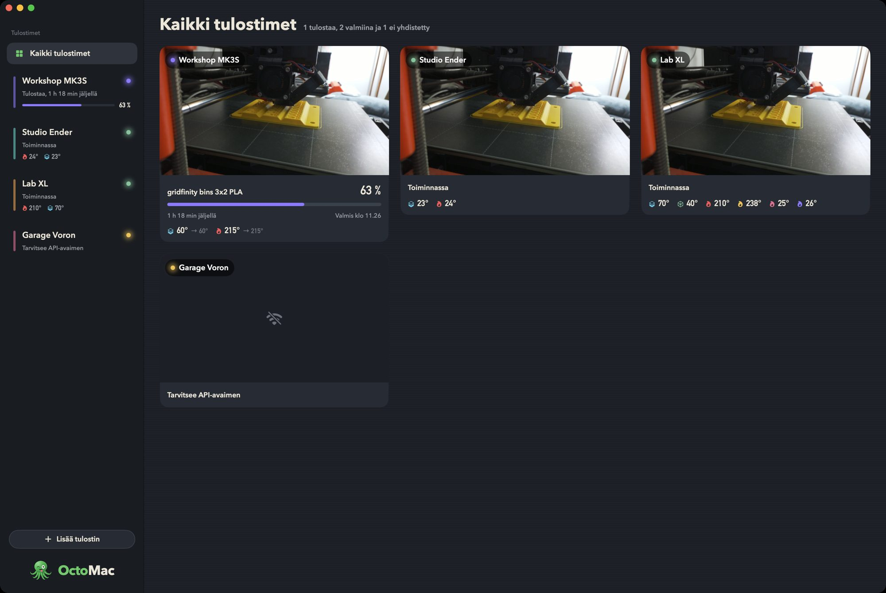

Kaikki tulostimet rinnakkain
Lisää niin monta OctoPrint-palvelinta kuin haluat. Jokainen näyttää tilansa, lämpötilansa ja edistymisensä sivupalkissa, ja Kaikki tulostimet kokoaa kaikki kamerat ja tulostukset yhdelle näytölle.
OctoMac kuuntelee OctoPrintin reaaliaikaista yhteyttä, joten lämpötilat, edistyminen ja tapahtumat näkyvät heti, kun ne tapahtuvat. Se löytää OctoPrintin verkostasi puolestasi ja toimii myös itse allekirjoitetun HTTPS:n ja käänteisen välityspalvelimen takana olevien tulostimien kanssa.
